Weapons
Every melee and ranged weapon, sorted from weakest to strongest.
Damage a second is damage divided by the time between swings or shots, and it is the fairest way to compare weapons. Your Combat skill and character level add to it. Heavy hits (a sledgehammer, a shotgun up close, a big overkill) can blow an enemy apart.
Weapons are made at the Workbench, Forge or Weapon Bench, sold at the Armoury in the Hull, dropped by raiders, or found at the end of dangerous places. Value is what an item is worth in trade. Vendors charge more than that, and pay less.
Melee
| Weapon | Damage | Swing | Damage a second | Reach | Grade | Value | Where to get it |
|---|---|---|---|---|---|---|---|
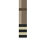 Rusty Pipe | 14 | 0.45s | 31.1 | 20 | Junk | 28 | Sold at The Armoury |
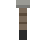 Rebar Club | 18 | 0.42s | 42.9 | 22 | - | 39 | Crafted at Workbench; Sold at The Armoury |
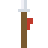 Spear | 24 | 0.55s | 43.6 | 34 | Scrap grade | 39 | Crafted at Workbench; Sold at The Armoury |
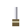 Shiv | 14 | 0.3s | 46.7 | 18 | Junk | 42 | Picked up during a side mission |
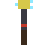 Cattle Prod | 26 | 0.5s | 52 | 24 | - | 47 | Crafted at Weapon Bench; Sold at The Armoury |
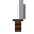 Machete | 22 | 0.4s | 55 | 23 | Scrap grade | 50 | Crafted at Workbench; Sold at The Armoury |
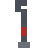 Crowbar | 21 | 0.38s | 55.3 | 22 | Scrap grade | 50 | Crafted at Workbench; Sold at The Armoury; Dropped by Scrapper |
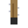 Nail Board | 30 | 0.5s | 60 | 23 | Iron grade | 54 | Crafted at Workbench; Sold at The Armoury; Dropped by Scrapper |
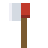 Fire Axe | 40 | 0.62s | 64.5 | 25 | Rare | 58 | Sold at The Armoury; Dropped by Brute |
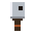 Combat Cleaver | 36 | 0.5s | 72 | 25 | Iron grade | 65 | Crafted at Forge; Sold at The Armoury (Hull reputation 3) |
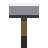 Sledgehammer | 72 | 1s | 72 | 25 | Iron grade | 65 | Crafted at Anvil; Dropped by Brute; Reward: Dex’s Grudge |
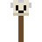 Skull Mace | 46 | 0.62s | 74.2 | 23 | - | 67 | Crafted at Weapon Bench; Sold at The Armoury (Hull reputation 3) |
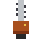 Ripsaw | 74 | 0.95s | 77.9 | 26 | - | 70 | Crafted at Weapon Bench; Sold at The Armoury (Hull reputation 3) |
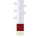 Raider Blade | 40 | 0.42s | 95.2 | 27 | Rare | 86 | Sold at The Armoury (Hull reputation 3); Dropped by Raid Chief |
| Kingpin's Cleaver | 50 | 0.5s | 100 | 28 | Rare | 90 | Dropped by Varro, the Kingpin |
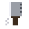 Chain Cleaver | 52 | 0.5s | 104 | 26 | Rare | 94 | Crafted at Anvil |
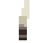 Hollowclaw Talon | 52 | 0.42s | 123.8 | 25 | Rare | 111 | Dropped by The Hollowclaw; Found at the end of Deepcut |
Ranged
Guns and bows need ammunition, which is used up as you fire.
| Weapon | Damage | Fire rate | Damage a second | Range, ammo | Grade | Value | Where to get it |
|---|---|---|---|---|---|---|---|
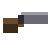 Sawn-off Shotgun | 13 | 1.15s | 11.3 | 95, Shells | Iron grade | 41 | Crafted at Forge; Dropped by Gunner |
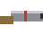 Scatter Pipe | 12 | 1s | 12 | 105, Shells | - | 58 | Crafted at Weapon Bench; Sold at The Armoury |
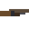 Pump Shotgun | 13 | 0.95s | 13.7 | 120, Shells | Rare | 57 | Sold at The Armoury; Dropped by Raid Chief |
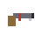 Zip Gun | 20 | 0.45s | 44.4 | 150, Pistol rounds | - | 45 | Crafted at Workbench; Sold at The Armoury |
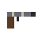 Pipe Pistol | 24 | 0.5s | 48 | 170, Pistol rounds | Iron grade | 48 | Crafted at Forge; Sold at The Armoury |
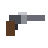 Revolver | 36 | 0.75s | 48 | 210, Pistol rounds | Rare | 48 | Sold at The Armoury; Dropped by Gunner; Reward: Parts and Pieces |
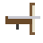 Crossbow | 46 | 0.95s | 48.4 | 230, Bolts | Iron grade | 49 | Crafted at Workbench; Sold at The Armoury |
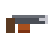 Harpoon Gun | 90 | 1.5s | 60 | 260, Bolts | - | 59 | Crafted at Weapon Bench; Sold at The Armoury (Hull reputation 3) |
| Warden's Crossbow | 52 | 0.85s | 61.2 | 250, Bolts | Rare | 60 | Found at the end of The Hollow |
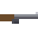 Road Rifle | 48 | 0.75s | 64 | 240, Pistol rounds | - | 63 | Crafted at Weapon Bench; Sold at The Armoury |
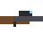 Hunting Rifle | 64 | 0.95s | 67.4 | 260, Pistol rounds | Rare | 66 | Crafted at Anvil; Sold at The Armoury (Hull reputation 3); Dropped by Sniper |
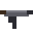 Rattler SMG | 11 | 0.13s | 84.6 | 150, Pistol rounds | Iron grade | 81 | Crafted at Anvil; Reward: Dead Man’s Ledger |
Ammunition
| Ammo | Used by | Value | Where to get it |
|---|---|---|---|
| Bolts | Crossbow, Warden's Crossbow, Harpoon Gun | 2 | Crafted at Workbench; Sold at The Armoury; Sold at Harbour Guard HQ |
| Pistol rounds | Pipe Pistol, Hunting Rifle, Revolver, Rattler SMG, Zip Gun, Road Rifle | 6 | Crafted at Forge; Sold at Mags' General Store; Sold at The Armoury; Sold at Harbour Guard HQ; Dropped by Scrapper; Dropped by Gunner; Dropped by Sniper; Dropped by Listener zealot; Reward: Hold the Gate |
| Shells | Sawn-off Shotgun, Pump Shotgun, Scatter Pipe | 2 | Crafted at Forge; Sold at The Armoury; Sold at Harbour Guard HQ; Dropped by Gunner |